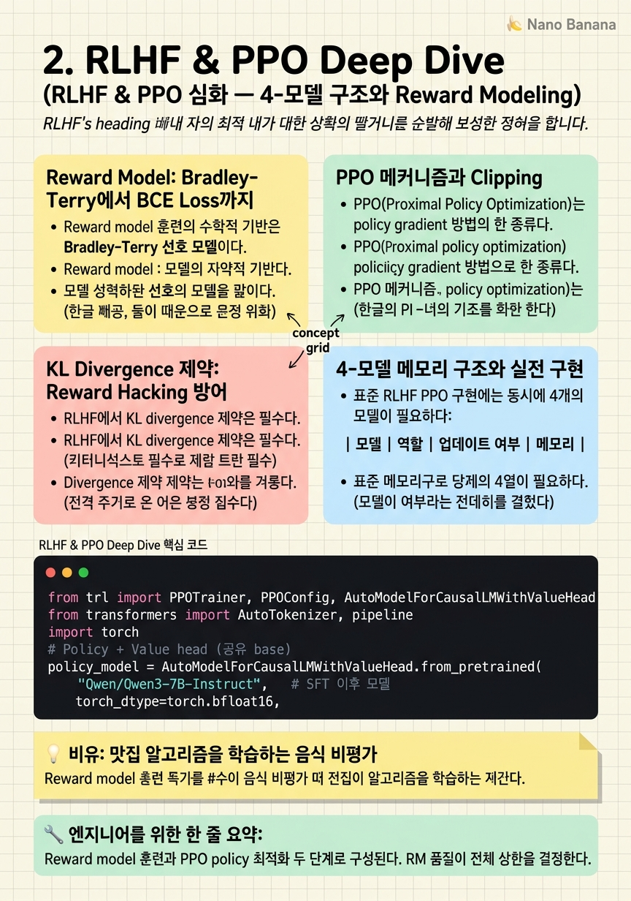

RLHF & PPO Deep Dive

🎯 학습 목표
- RLHF의 4-모델 구조(policy, reference, reward, value)와 각 역할을 설명할 수 있다
- Bradley-Terry 선호 모델에서 reward model 손실함수를 유도할 수 있다
- PPO clipping과 KL penalty의 역할을 수식 레벨에서 설명할 수 있다
- Reward hacking이 발생하는 메커니즘과 완화 방법을 제시할 수 있다
- RLHF의 실전 학습 불안정성 원인과 대응 방법을 설명할 수 있다
SFT만으로는 충분하지 않다. SFT는 '사람이 작성한 응답을 모방'하도록 훈련하지만, 어떤 응답이 더 나은지에 대한 선호 신호를 직접 학습하지 못한다. RLHF(Reinforcement Learning from Human Feedback)는 이 문제를 해결하기 위해 사람의 선호를 reward function으로 변환하고, 이를 통해 모델 정책을 최적화한다.
RLHF는 두 단계로 구성된다. 첫째, Reward Model 학습: 사람이 두 응답 중 어느 것을 선호하는지 표시한 데이터(preference data)로 reward model을 훈련한다. 둘째, Policy Optimization: 학습된 reward model을 환경으로 삼아 RL 알고리즘(대표적으로 PPO)으로 policy(LLM)를 최적화한다.
이 과정에서 총 4개의 모델이 동시에 메모리에 올라와야 한다: policy model(훈련 대상), reference model(KL 제약용 frozen copy), reward model(보상 산출), value model(advantage 추정). 이 메모리 부담이 RLHF의 실용적 장벽 중 하나였으며, 이후 DPO 등이 등장하는 동기가 되었다.
핵심 내용
Reward Model: Bradley-Terry에서 BCE Loss까지
Reward model 훈련의 수학적 기반은 Bradley-Terry 선호 모델이다. 응답 \(y_w\)(선호)와 \(y_l\)(비선호) 사이에서, 사람이 \(y_w\)를 선택할 확률을:
\[P(y_w \succ y_l) = \sigma(r(x, y_w) - r(x, y_l))\]
로 모델링한다. 여기서 \(r(x, y)\)는 reward model이 출력하는 스칼라 reward다. 이를 최대화하는 것은 다음 loss를 최소화하는 것과 동치다:
\[\mathcal{L}_{RM} = -\mathbb{E}_{(x, y_w, y_l)} \left[ \log \sigma(r(x, y_w) - r(x, y_l)) \right]\]
실제 구현에서 reward model은 보통 SFT 모델을 base로 하고 마지막 레이어에 linear head \(r \in \mathbb{R}\)을 붙인 형태다. 마지막 토큰(EOS)의 hidden state에서 스칼라 값을 뽑는다.
Reward model 품질이 전체 RLHF의 상한이다. 잘못된 reward model은 policy를 잘못된 방향으로 최적화한다. 특히 annotation 가이드라인의 일관성, annotator 간 disagreement 처리 방법이 중요하다.
PPO 메커니즘과 Clipping
PPO(Proximal Policy Optimization)는 policy gradient 방법의 한 종류다. 표준 REINFORCE는 policy 업데이트 크기에 제약이 없어 training instability를 유발한다. PPO는 새 정책과 이전 정책의 비율 \(\rho_t = \pi_{\theta}(a_t|s_t) / \pi_{\theta_{old}}(a_t|s_t)\)을 clip하여 너무 큰 업데이트를 방지한다:
\[\mathcal{L}^{CLIP}(\theta) = \mathbb{E}_t \left[ \min \left( \rho_t \hat{A}_t, \text{clip}(\rho_t, 1-\epsilon, 1+\epsilon) \hat{A}_t \right) \right]\]
여기서 \(\hat{A}_t\)는 advantage estimate, \(\epsilon\)은 보통 0.2이다. Advantage가 양수인 경우(좋은 행동), 비율이 \(1+\epsilon\)을 넘으면 gradient를 0으로 만든다. 이는 한 번의 업데이트로 정책이 너무 멀리 가지 않도록 제어한다.
언어 모델에서 '토큰 생성'이 'action'이고, '생성된 시퀀스 전체'가 'trajectory'다. 각 토큰 위치의 advantage는 value model이 추정하고, 최종 reward는 시퀀스 끝에서 reward model이 산출한다.
KL Divergence 제약: Reward Hacking 방어
RLHF에서 KL divergence 제약은 필수다. PPO만으로 최적화하면 policy가 reward model을 속이는 방향으로 급격히 변화한다 — 이를 reward hacking 또는 Goodhart's Law 현상이라 한다. Reward model이 '자신감 있어 보이는 긴 응답'을 선호한다면, policy는 실제 유용성과 무관하게 무조건 긴 응답을 생성하도록 최적화된다.
KL penalty는 최적화 목표에 reference model(SFT 모델의 frozen copy)과의 거리를 penalize하는 항을 추가한다:
\[\mathcal{L}_{total} = \mathbb{E}\left[r(x, y) - \beta \cdot D_{KL}(\pi_\theta(\cdot|x) \| \pi_{ref}(\cdot|x))\right]\]
\(\beta\)는 KL constraint의 강도를 조절한다. 너무 작으면 reward hacking, 너무 크면 SFT 모델과 차이가 없어진다. 실제로 \(\beta\)는 0.01~0.1 범위에서 시작해 reward curve와 KL divergence를 모니터링하면서 조정한다.
Over-optimization은 RLHF의 잘 알려진 문제다. 처음에는 reward가 올라가지만 KL이 증가하면서 downstream 성능이 오히려 떨어지는 inverted-U curve 패턴이 관찰된다. 조기 종료 또는 adaptive \(\beta\) 조정이 대응 방법이다.
4-모델 메모리 구조와 실전 구현
표준 RLHF PPO 구현에는 동시에 4개의 모델이 필요하다:
| 모델 | 역할 | 업데이트 여부 | 메모리 | |---|---|---|---| | Policy | 실제 훈련 대상 | ✓ | ~14GB (7B, bf16) | | Reference | KL 계산용 frozen copy | ✗ | ~14GB | | Reward | 스칼라 reward 출력 | ✗ | ~14GB | | Value | Advantage 추정 | ✓ | ~14GB |
총 ~56GB+ VRAM이 필요하다. 실전에서는 policy와 reference를 공유하고 lora adapter만 분기하거나, reward model과 value model을 같은 base에서 가져오는 방식으로 메모리를 줄인다. TRL의 PPOTrainer는 이 복잡한 구조를 추상화하지만, 내부 동작을 이해해야 디버깅이 가능하다.
DeepSpeed ZeRO-2/3을 RLHF에 적용할 때 값 함수(value function)의 forward-backward 스케줄링이 까다롭다. RLHF 전문 프레임워크인 OpenRLHF나 veRL이 이 문제를 더 잘 처리한다.
RLHF 학습 불안정성과 디버깅
RLHF는 SFT보다 훨씬 불안정하다. 흔한 문제들:
Reward collapse: Policy가 reward를 최대화하는 특정 응답 패턴(예: 매우 긴 응답, 특정 구문 반복)으로 수렴한다. → KL coefficient \(\beta\)를 높이거나 reward clipping(-5.0, 5.0 범위)을 적용한다.
Value function divergence: Value model의 예측이 실제 reward와 크게 어긋나면 advantage estimation이 부정확해진다. → Value loss clipping (clip_range_vf=0.5)과 value loss 가중치 조정으로 대응한다.
Entropy collapse: 모델의 출력 분포가 너무 좁아져 다양성이 사라진다. → Entropy bonus 추가(entropy_coeff=0.01)로 exploration을 장려한다.
모니터링해야 할 핵심 지표: reward 평균, KL divergence, entropy, 응답 길이 분포. 이들이 동시에 안정적으로 움직이는지 확인해야 한다.
💡 비유로 이해하기
Reward model은 회사가 고용한 베테랑 음식 비평가에 해당한다. 이 비평가에게 수천 쌍의 음식 사진을 보여주고 '어느 것이 더 맛있어 보이나요?'라고 물어 선호 데이터를 모은다. 비평가는 이 데이터를 바탕으로 '맛있는 음식'의 특징을 학습한다 — 이것이 reward model 훈련이다.
PPO는 이 비평가의 점수를 받아 요리사(policy)를 개선하는 과정이다. 요리사가 만든 요리를 비평가에게 보여주고 점수를 받아 훈련한다. KL 제약은 '너무 급격히 변하지 마라'는 가이드라인이다 — 원래 레스토랑의 시그니처 스타일을 완전히 잃어버리면 안 되기 때문이다.
Reward hacking은 요리사가 비평가의 선호를 역이용하는 현상이다. 비평가가 '풍성한 플레이팅'을 좋아한다는 것을 알고, 실제 맛과 무관하게 접시를 화려하게 채우기 시작하는 것이다. Reference model(원래의 요리 스타일)과의 거리를 벌칙으로 추가하면 이 현상을 억제할 수 있다.
💻 코드 예시
TRL의 PPOTrainer를 사용한 RLHF 구현 예시다. Reward model은 별도로 훈련되어 있다고 가정하고, policy 최적화 루프를 중심으로 보여준다.
from trl import PPOTrainer, PPOConfig, AutoModelForCausalLMWithValueHead
from transformers import AutoTokenizer, pipeline
import torch
# Policy + Value head (공유 base)
policy_model = AutoModelForCausalLMWithValueHead.from_pretrained(
"Qwen/Qwen3-7B-Instruct", # SFT 이후 모델
torch_dtype=torch.bfloat16,
)
tokenizer = AutoTokenizer.from_pretrained("Qwen/Qwen3-7B-Instruct")
# Reward model (별도 훈련된 모델 가정)
reward_pipe = pipeline(
"text-classification",
model="your-reward-model",
device=0,
)
ppo_config = PPOConfig(
model_name="qwen3-7b-rlhf",
learning_rate=1e-5,
batch_size=16,
mini_batch_size=4,
gradient_accumulation_steps=4,
ppo_epochs=4, # inner epochs per batch
kl_penalty="kl", # KL divergence penalty
init_kl_coef=0.2, # beta 초기값
adap_kl_ctrl=True, # adaptive KL control
target_kl=6.0, # 목표 KL divergence
cliprange=0.2, # PPO epsilon
vf_coef=0.1, # value function loss weight
)
trainer = PPOTrainer(config=ppo_config, model=policy_model, tokenizer=tokenizer)
# 훈련 루프
for batch in dataloader:
queries = batch["input_ids"]
# Policy가 응답 생성
responses = trainer.generate(queries, max_new_tokens=512)
# Reward model이 스칼라 reward 산출
texts = [tokenizer.decode(r) for r in responses]
rewards = [torch.tensor(r["score"]) for r in reward_pipe(texts)]
# PPO step: KL-constrained policy update
stats = trainer.step(queries, responses, rewards)
trainer.log_stats(stats, batch, rewards)AutoModelForCausalLMWithValueHead는 LM head와 value head를 공유 backbone으로 연결한다. adap_kl_ctrl=True와 target_kl=6.0은 KL divergence를 자동으로 조정해 reward hacking을 방지한다. ppo_epochs=4는 같은 배치 데이터로 4번 업데이트하는 inner loop로, 데이터 효율을 높이지만 너무 크면 오버피팅된다. trainer.generate()는 내부적으로 policy와 reference 양쪽에서 로그 확률을 계산한다.
🏭 현업에서의 평가
✅ 시니어가 보는 것
- Reward model 훈련 데이터 품질 보장 방법 (annotator agreement, data cleaning)
- KL divergence와 reward 사이의 trade-off를 모니터링하는 방법
- 4-모델 구조에서 메모리 효율화 전략 (LoRA policy, shared backbone)
- Reward hacking을 조기에 탐지하는 지표 설계
- PPO vs GRPO vs DPO 선택 기준을 데이터와 리소스 관점에서 설명할 수 있는 능력
⚠️ 레드 플래그
- RLHF = PPO라고 단순화해서 이해하는 경우 (reward model과 data collection 과정을 놓침)
- KL penalty의 역할을 '과적합 방지'로만 설명하는 경우
- Reward hacking을 경험한 적이 없다고 답하는 경우 (거의 모든 RLHF에서 발생함)
- Value function의 역할을 variance reduction으로만 설명하는 경우 (advantage estimation 연결 부족)
🎤 예상 인터뷰 질문
- RLHF 훈련 중 reward가 올라갔지만 실제 모델 품질이 떨어졌던 경험이 있나요? 어떻게 진단했나요?
- Policy model과 reference model을 분리하는 대신 같은 모델에 LoRA를 분기하는 방식의 장단점은?
- Human preference annotation에서 annotator disagreement를 어떻게 처리하셨나요?
✨ 핵심 요약
RLHF = RM Training + PPO
Reward model 훈련과 PPO policy 최적화 두 단계로 구성된다. RM 품질이 전체 상한을 결정한다.
Bradley-Terry로 preference를 reward로 변환
사람의 선호 비교를 Bradley-Terry 모델로 모델링하고 BCE loss로 reward model을 훈련한다.
PPO clipping은 업데이트 크기 제어
ρ(새 정책 / 구 정책)를 [1-ε, 1+ε]으로 clip하여 급격한 정책 변화를 방지한다.
KL penalty는 reward hacking 방어선
Reference model과의 KL을 penalize하여 policy가 원래 능력을 잃지 않고 reward를 추구하도록 균형을 잡는다.
4-모델 구조가 RLHF의 메모리 병목
Policy, Reference, Reward, Value 4개 모델이 필요하다. LoRA 분기나 shared backbone으로 완화 가능하다.
Over-optimization은 inverted-U curve
처음에는 reward 상승, 이후 KL 증가와 함께 downstream 성능 하락. 조기 종료가 필수다.
entropy collapse 모니터링 필수
생성 entropy가 급감하면 reward hacking 또는 mode collapse 신호다. entropy coefficient 추가로 완화한다.
OpenRLHF/veRL이 실전 선택지
분산 RLHF에서 TRL PPOTrainer보다 메모리·throughput 효율이 높다.